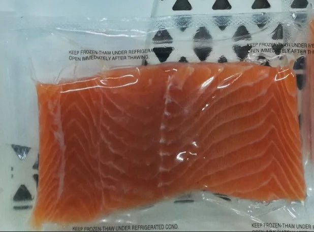
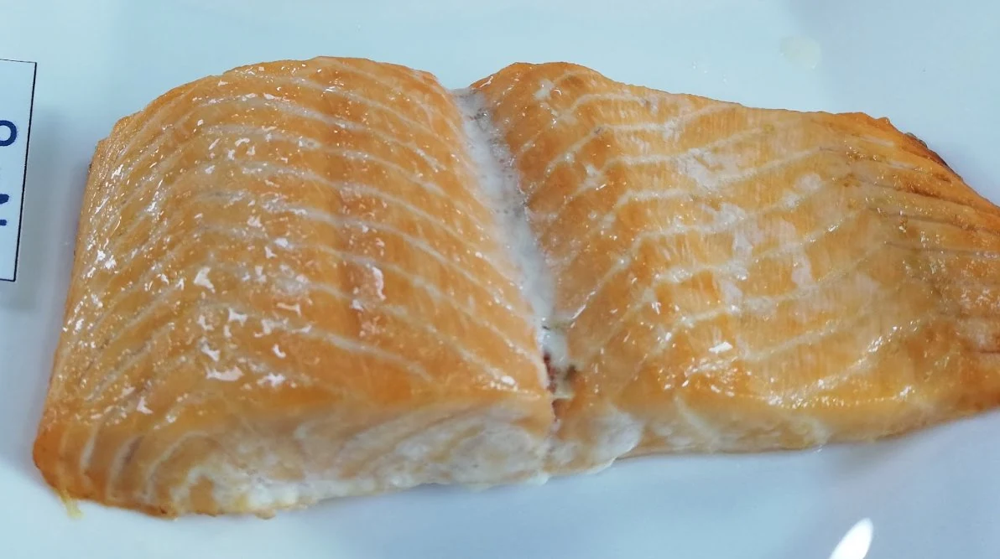
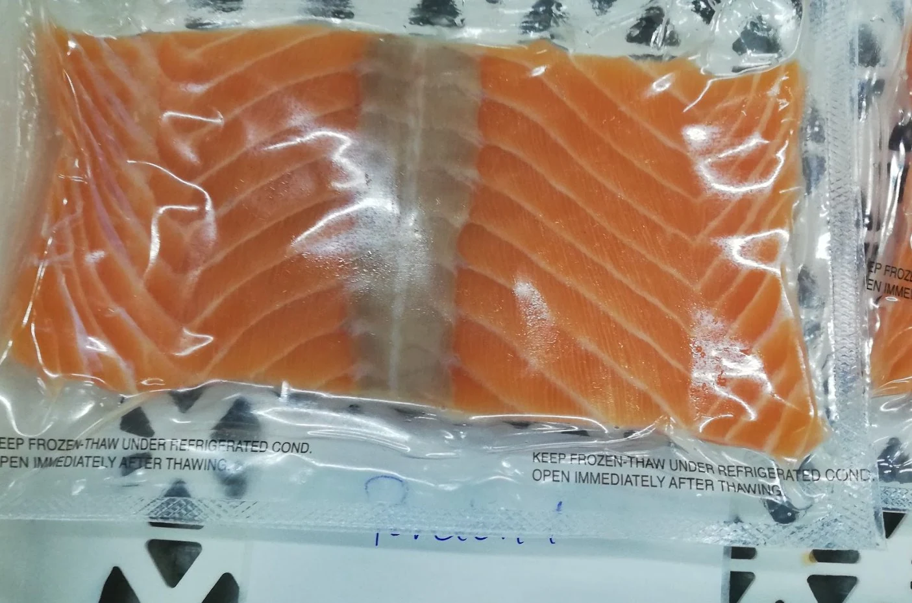
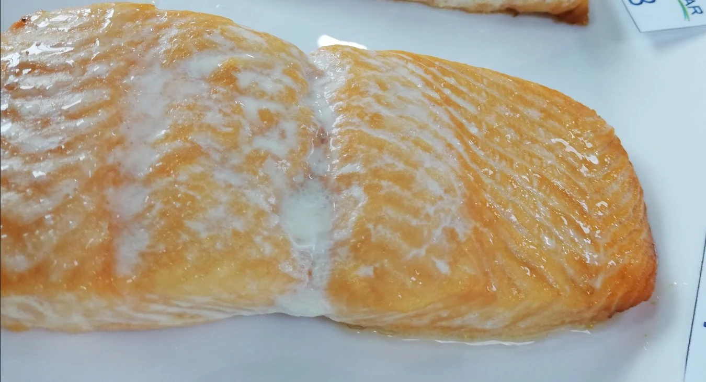

Rendimiento y textura
ANPEIX 100 PLUS SP
Reduce drip, estabiliza el producto, mejora color, textura, rendimiento y la percepciónd e valor del cliente finsal
VER MÁSTQI Chile ofrece y aplica coadyuvantes y aditivos TEQUISA, de origen Europeo, junto con soluciones de control microbiológico Phageguard, desarrolladas por Micreos. Solo tecnología Europea. Te apoyamos en la implementación de estas soluciones para obtener mejor rendimiento, calidad y rentabilidad por kilo de tu producto final.
TEQUISA desarrolla las soluciones. TQI Chile te ayuda a implementarlas, desarrollar pruebas, apoyarte en aspectos documentales y te acompaña durante el proceso.
Puedes optar por soluciones orientadas a control microbiológico o bien otras que te permitirán mejorar rendimiento, calidad y presentación
Reduce drip, estabiliza el producto, mejora color, textura, rendimiento y la percepciónd e valor del cliente finsal
VER MÁSMejor cobertura, menos deshidratación durante la congelación, producto más limpio al desglasear.
VER MÁSReducción / eliminación de Listeria en productos listos para consumo. Aplicación directa sobre producto o en superficies.
Ver PhageGuardComparación visual de resultados en textura, color, cocción, resultados. Las diferencias organolépticas también se reflejan en un mejor rendimiento y estabilidad del producto final.




Cada prueba se diseñla en base a tu proceso y lo que necesites. El objetivo es lograr resultados medibles
Qué produces, búsqueda de puntos de mejora y objetivos.
Dosis, temperatura, tiempo, control y criterios de medición.
Ejecución con acompañamiento técnico y registro.
Datos comparables sobre pruebas y control.
Si tienes un problema de rendmiento, presentación o desafíos microbiológicos, podemos ayudarte.